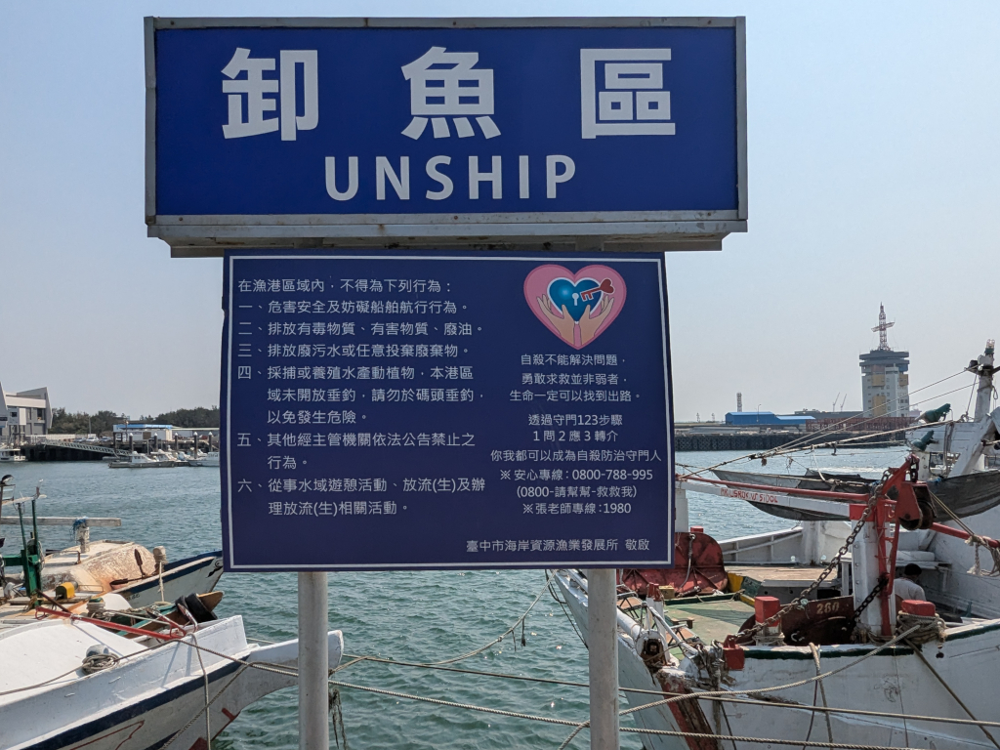
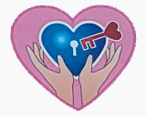

|
 Port of Taichung "Unship" Sign April 12, 2026 Here are the contents of an interesting sign at the Port of Taichung. 卸魚區 (UNSHIP) means "Fish Unloading Area". And while the left
side sets out some rules for port workers and visitors, the right side was a complete surprise.
The left side reads:
 自殺不能解決問題, 勇敢求救並非弱者, 生命一定可以找到出路。 透過守門123步驟 1問2應3轉介 你我都可以成為自殺防治守門人 ※安心專線:0800-788-995 (0800-請幫幫-救救我) ※張老師專線:1980 臺中市海岸資源漁業發展所敬啟 which translates to: Suicide doesn't solve problems; bravely seeking help is not a sign of weakness; there's always a way out. Through the 1-2-3 gatekeeping steps: 1. Ask; 2. Respond; 3. Refer. You and I can all become suicide prevention gatekeepers. ※Anxin Hotline: 0800-788-995 (0800-Please Help-Save Me) ※Teacher Zhang's Hotline: 1980 Respectfully submitted by Taichung City Coastal Resources and Fisheries Development Institute |